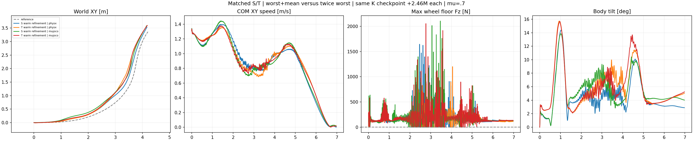
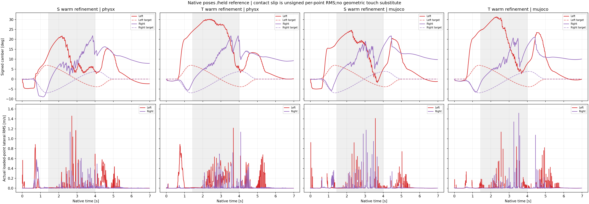

Neither S nor T passes the complete nominal screen in both engines. The task remains unfinished;no new friction sweep is launched.
| Native episode | Core XY RMSE(m) | Speed/reference | Beta RMSE(deg) | Any-wheel support(%) | Max gap(ms) | HF/original | Failed gates/9 |
|---|---|---|---|---|---|---|---|
| S warm refinement | physx | 0.1718 | 0.9493 | 6.55 | 90.89 | 47.5 | 0.606 | 4 |
| T warm refinement | physx | 0.2639 | 0.8989 | 9.60 | 94.09 | 52.5 | 0.480 | 7 |
| S warm refinement | mujoco | 0.2519 | 0.9066 | 7.67 | 91.03 | 45.0 | 0.643 | 7 |
| T warm refinement | mujoco | 0.2486 | 0.9076 | 8.77 | 91.39 | 50.0 | 0.513 | 7 |
All native validation is at mu=0.7. Core tracking is 1.44–4.00 s;whole tracking is 0–6.96 s. Support is sampled every 2.5 ms over 0.02–6.96 s. One actual upward wheel-floor normal force must exceed 5 N at every sample;the other wheel may lift. Original requirements remain:core/whole XY RMSE at most 0.15 m and peak at most 0.30 m;core speed ratio 0.95–1.10;nonzero-reference-beta RMSE at most 10 deg;core angular-XY 10–100 Hz RMS at most 0.7 of original same-engine PPO;100% support and zero longest gap. Height is free. Support after collapse or lower jitter after stopping cannot qualify the task.
S_physx. Failed gates: core_xy_rmse, core_speed_retention, any_wheel_every_physical_sample, longest_no_support_gap. Maximum whole-episode body tilt: 14.38 deg;postinitial nonwheel-contact samples above 5 N: 0.
Loaded camber target RMSE, left/right: 11.43 / 11.14 deg. Loaded-point lateral RMS median, left/right: 0.0103 / 0.0040 m/s.
T_physx. Failed gates: core_xy_rmse, core_xy_peak, whole_xy_rmse, whole_xy_peak, core_speed_retention, any_wheel_every_physical_sample, longest_no_support_gap. Maximum whole-episode body tilt: 15.73 deg;postinitial nonwheel-contact samples above 5 N: 0.
Loaded camber target RMSE, left/right: 24.21 / 12.25 deg. Loaded-point lateral RMS median, left/right: 0.0132 / 0.0040 m/s.
S_mujoco. Failed gates: core_xy_rmse, core_xy_peak, whole_xy_rmse, whole_xy_peak, core_speed_retention, any_wheel_every_physical_sample, longest_no_support_gap. Maximum whole-episode body tilt: 13.86 deg;postinitial nonwheel-contact samples above 5 N: 0.
Loaded camber target RMSE, left/right: 14.37 / 11.83 deg. Loaded-point lateral RMS median, left/right: 0.0029 / 0.0058 m/s.
T_mujoco. Failed gates: core_xy_rmse, core_xy_peak, whole_xy_rmse, whole_xy_peak, core_speed_retention, any_wheel_every_physical_sample, longest_no_support_gap. Maximum whole-episode body tilt: 15.68 deg;postinitial nonwheel-contact samples above 5 N: 0.
Loaded camber target RMSE, left/right: 20.75 / 10.64 deg. Loaded-point lateral RMS median, left/right: 0.0060 / 0.0038 m/s.
S_physx. Inspected2.24/3.00/4.00/6.96s poses remain upright. The displayed body path lies outside the reference through the turn. Normal-force and support traces show intermittent missing support despite the shortened worst gap;continuous support is not achieved.
T_physx. Inspected poses remain upright,with a larger turn-path offset than S in PhysX. More supported samples accompany reduced core speed and larger XY errors. The support improvement is not a completion of the original task.
S_mujoco. Inspected poses remain upright. A turn-path offset and repeated missing-support samples remain. Neither the reduced worst gap nor the final stationary supported pose certifies successful turning.
T_mujoco. Inspected poses remain upright,with turn-path offset and a missing-support window visible near3s. The final stationary pose is supported,but earlier gaps and speed/XY failures remain.

d_j = clip((0.5*m*g - max(Fz_left,j,Fz_right,j,0))/(0.5*m*g - 5 N),0,1) S cost = max8(d) + mean8(d) T cost = 2*max8(d) raw contact reward = unchanged gated positive G - cost external contribution = 0.4 * 0.02 s * raw contact reward
Both costs range from 0 to 2 and agree for every uniform-force window. S substitutes a mean-deficit component for one worst-deficit component. This provides an arithmetic improvement when a missing substep is repaired while another gap remains. The matched experiment tests whether that credit improves native learning;the offline observation alone does not prove a PPO gradient problem. The 0.5 mg margin shapes reward only;it does not replace the 5 N acceptance rule. The held-reference-beta gate,the positive support bonus and all other 14 reward terms are unchanged.
Both arms independently load the same original K actor,critic and normalizers from checkpoint 8cb011e4c5e2a33a685bc58280df410141ab99aa245892042762b8956595fe5a. They use fresh Adam,fixed learning rate 0.0001,clip 0.1,seed 42,and 512*24*200=2,457,600 additional transitions each. Cumulative count is 14,745,600. Neither arm starts from the previous camber actor. This is matched warm refinement,not scratch learning.
Both use the same independent signed left/right camber reference 0c8f2cfc2876bbd103bad206e708d91bf6753f8faa75c3107b0ec37c56c448b9 and spin-invariant 3D axle reward. The motion aims at 110%/90% of the original signed kinematic lateral velocity on the left/right. Original car body path,speed and yaw are retained. Reconstructed wheel-center paths,leg poses and wheel spin are included in the reference. Geometric contact in that reference does not establish loaded support. Original rigid cylinders,motor limits,leg PD,DR,400 Hz physics and 50 Hz held actions remain unchanged. Historical K has a different cost bound [0,1] and is not the matched scale control.
Body tracking scores use the original locked car reference da9945c25e6a9afc8ed27c6a3af117b7c5f091a5a8e98834457964a5640b9254. The generated motion's root poses and velocities agree within 1e-12. Its regenerated FP64 base streams differ slightly from the original FP32 arrays,by at most 2.34e-7 m in position. This scoring reference is distinct from the new wheel motion actually ingested by both actors. Exact binding and precision differences.

Native signed camber comes from reconstructed wheel local+Y axles. Targets follow the actual held policy clock:samples 1–8 use reference frame 0,9–16 frame 1. Loaded camber statistics require wheel-summed upward Fz above 5 N. Slip additionally requires at least one actual individual ground point above 5 N. Recorded lateral slip is an unsigned,normal-force-weighted per-point RMS. An unloaded zero placeholder is excluded. Ideal single-point signed reference velocity and native multi-point unsigned RMS are different estimators. No signed slip tracking claim is inferred from these records.
Neither actor faithfully tracks the intended opposed camber. Actual loaded camber error remains about 11–24 deg while the kinematic reference peaks near 6.95 deg. The low loaded-point slip medians with intermittent spikes also do not establish sustained reference-like lateral sliding. The contact-duration change alone has not solved the conflict between support,tracking and the generated wheel motion.
The first source snapshot omitted its frozen K runtime dependency and failed before environment construction. Driver,continuation and smoke handles were confirmed terminal and their failed records preserved. A new immutable source snapshot includes that dependency;all 23 tests pass from its extracted isolated directory. Remote admission loads all actual runtime-source ledger entries before launching Isaac. Both native short smokes and their strict CPU checkpoint/export verifiers precede formal training.
Launch records contain fresh full NVML compute/graphics,memory and PCI audits. One owned GPU job runs at a time on a completely idle device. Source snapshots are rehashed throughout. Six reference tensor streams are checked after named FP32 reordering at startup and final audit. Nominal single-environment evaluation disables DR/noise and captures native terminal states before reset. Full final actor/checkpoint hashes are checked on the host;their bytes are excluded from the evidence archive.
The four panels replay original opaque native poses with the same fixed camera distance and relative translation. No pose smoothing,height correction,alignment,yaw follow or zoom is applied. All 350 video frames decode. Selected stills 2.24,3.00,4.00 and 6.96 s and the diagnostic plots are reviewed separately;full manual video playback is not claimed. These single-seed nominal episodes do not establish robustness.
All metrics and unchanged gates · Camber,slip and body-integrity details · Artifact verification · Still review · Final process audit · Evidence hashes · Isolated CPU tests · Preserved preflight failure.
Historical credit audit · Previous single-scale K camber test · Trainer · Serial driver · Native continuation · Analyzer · Renderer. Exact argv and existing asset paths are retained in the collected records. No model,weight,credential or native-library bytes are uploaded or committed.